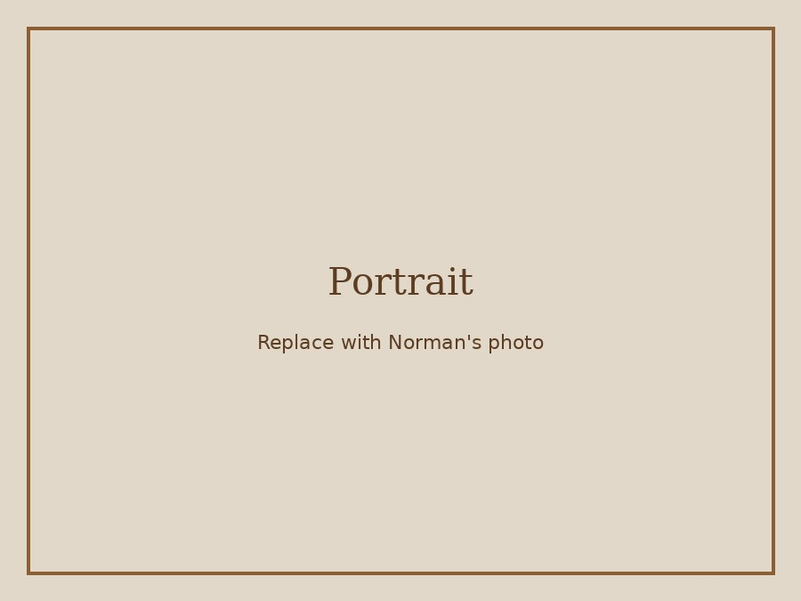
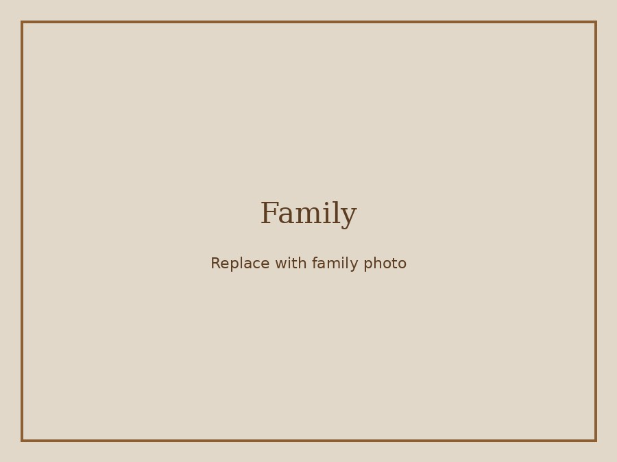
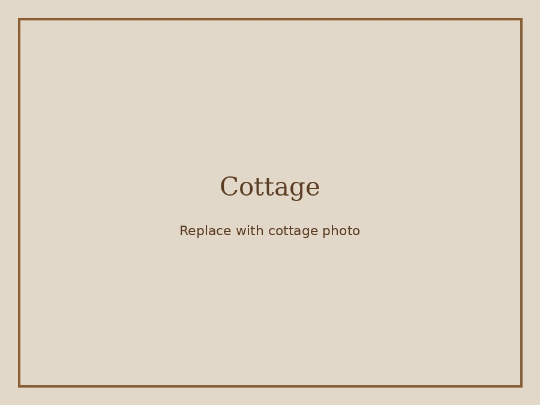
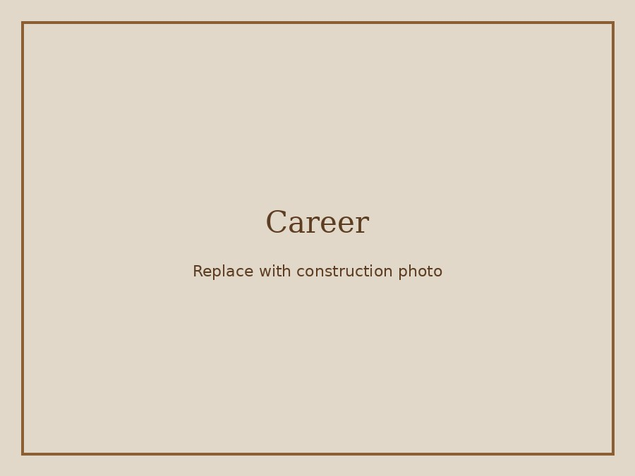

Obituary
Norman Arthur Dumont, of Fall River, Massachusetts, passed away on May 28, 2026, at the age of 78.
Born in Fall River, Norman spent his entire life in the city he proudly called home. He was a devoted husband, father, grandfather, brother, friend, and respected union carpenter whose work and influence can still be seen throughout Southeastern Massachusetts.
While attending high school, Norman met the love of his life, Josephine Gesiak. They married shortly after graduation and began a partnership that would endure for decades. Together they built a life centered on family, raising three children and later welcoming six grandchildren who brought him tremendous pride and happiness. Through every stage of life, Norman remained dedicated to providing a safe, secure, and loving home for his family.
A proud member of Local 1305, Norman dedicated more than three decades to the carpentry trade, working from the late 1960s until his retirement in 2005. He often said that construction was not simply his occupation, but his passion. One of his greatest professional joys was having the opportunity to work alongside his father, continuing a tradition of craftsmanship and hard work that shaped his life.
Throughout his career, Norman worked for numerous contractors and served as a foreman, general foreman, and shop steward. Known for his ability to interpret complex engineering plans and transform them into reality, he helped oversee the construction of bridges, schools, water treatment facilities, gas stations, and countless other projects throughout the region. Many who travel the highways of Southeastern Massachusetts have likely crossed a bridge or passed a structure that bears the mark of his leadership and craftsmanship.
Norman's accomplishments were made even more remarkable by a tragic accident at the age of sixteen that resulted in the loss of vision in one eye when lime was accidentally splashed into it while marking a football field. Rather than allowing the injury to define him, he met the challenge with determination and resilience, building an extraordinary career in a profession that demanded precision, awareness, and leadership.
As a supervisor, Norman routinely led large crews of men on major construction projects. His knowledge, confidence, and booming voice made him a natural leader. Whether directing activity on a busy job site or sharing stories among family and friends, Norman's presence was unmistakable. He possessed a gift for storytelling and never lacked an audience willing to listen.
Norman was also a proud representative of a generation when union membership meant more than earning a living—it meant belonging to a brotherhood. The friendships he formed through his trade remained among the most valued relationships of his life and reflected the loyalty and camaraderie he carried with him throughout the years.
Outside of work, Norman never stopped building. He was always willing to lend a hand to friends and family with home projects, additions, and repairs. His greatest labor of love, however, was the family cottage purchased in 1990 in the White Mountains of New Hampshire. Over the years, he transformed the property through numerous additions and the construction of a two-story barn, creating a place where generations of family members gathered and made lasting memories. The cottage became his sanctuary, a peaceful retreat where he could enjoy the beauty of the mountains and the company of those he loved most.
Norman was predeceased by his parents, Normand Dumont and Corrine (Harrison) Dumont.
He is survived by his beloved wife, Josephine Dumont; his children, Norman Dumont(wife Arlene Benevides Dumont), Michelle Peixoto (husband Joseph Peixoto), and Gene Dumont (wife Joanna Frank Dumont); his grandchildren, Kayla, Nicolas, Remy, Jacqueline, Kolby, and Dylan; and his siblings, Cheryl (Dumont)Raposaand husband Mercia, Denise (Dumont)Fernandes And husband Joe, and the late David Dumont. He also leaves behind many extended family members, friends, fellow union brothers, and all those whose lives were enriched by his friendship, guidance, and generosity.
Norman's legacy lives on in the family he cherished, the structures he helped build, and the countless stories that will continue to be told by those fortunate enough to have known him. From the bridges and public works projects that serve communities throughout Southeastern Massachusetts to the family cottage he lovingly expanded in the White Mountains, his life's work can still be seen and enjoyed by others. He will be deeply missed, lovingly remembered, and forever appreciated by all whose lives he touched.
Those who knew Norman will always remember his booming voice, larger-than-life presence, and gift for storytelling. When asked, "How you doing, Norm?" his answer was almost always the same: "Superfantastic." It was a response that reflected his spirit, resilience, and positive outlook on life. Though he is no longer with us, family and friends can still hear that familiar reply and smile. In honoring Norman's memory, there is perhaps no better answer to give on his behalf one last time:
“Superfantastic.”
A Life Built by Hand
Norman's work helped shape communities across Southeastern Massachusetts. His craftsmanship, leadership, and pride in the union trade live on in the bridges, schools, facilities, and public works he helped bring to life.
Family First
Above all, Norman was a husband, father, and grandfather. The home he built with Josephine, and the memories made at the White Mountains cottage, remain part of his enduring legacy.
Life Timeline
Photo Gallery
Replace these placeholder image files in the images folder with your own family photos using the same filenames.




Share a Memory
Family and friends are invited to share stories, photos, and memories of Norman. To add a guestbook later, you can use a free GitHub Discussions-based tool such as Giscus, or simply add memories directly to this page.
Example memory: “How you doing, Norm?”
“Superfantastic.”